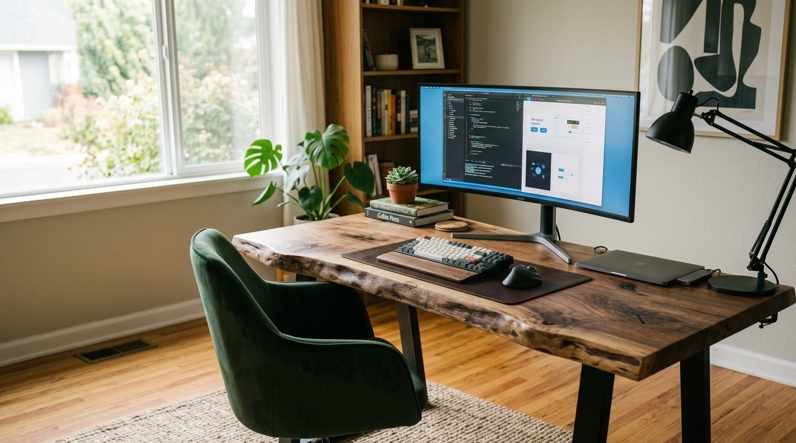
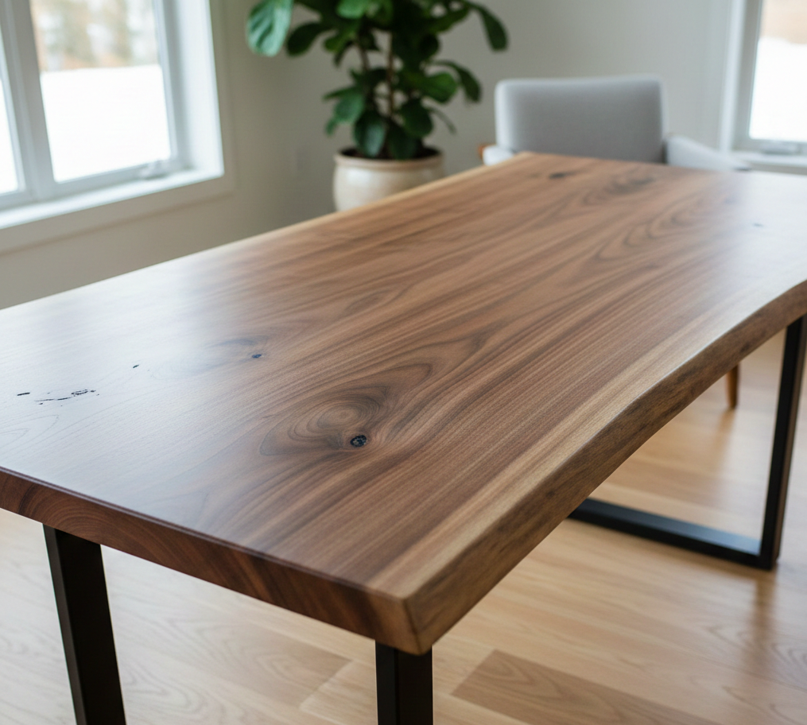
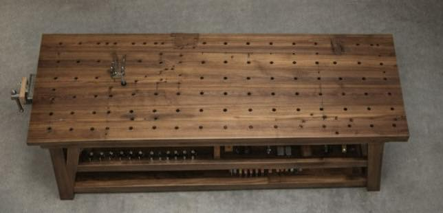
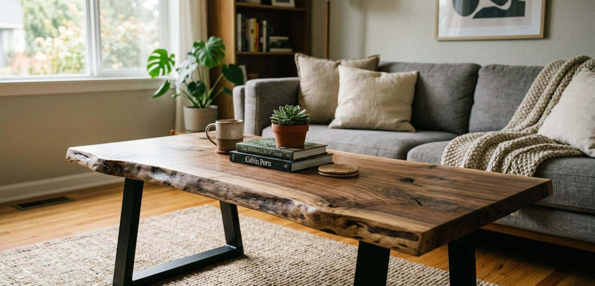

About LoneStar Woodworking & Live Edge Furniture Co.
The story of a Navy veteran, a San Antonio workshop, and the belief that great furniture starts with respecting the wood.

From Navy Decks to Workshop Floors
I spent years in the Navy learning that the details matter — that precision isn't optional and shortcuts always catch up with you. When I came home to San Antonio, I needed something to do with my hands. Something real.
A buddy gave me a beat-up pecan slab he'd been storing in his garage. I had a borrowed sander and a YouTube tutorial. That first table was rough. But when I ran my hand across the finished surface and felt the grain under my fingers — the natural curves, the knots, the story of that tree — I knew I'd found the thing I was supposed to be doing.
That was the start. I've been building live edge furniture full-time since then, right here in San Antonio. Every piece I make carries the same discipline I learned in the service: measure twice, don't rush the work, and never deliver anything you wouldn't put in your own home.
— Rob Faulkner, Owner & Craftsman
Our Philosophy
Three principles guide everything we build.
Honor the Wood
Every slab has a story — decades of Texas sun, Hill Country rain, and deep roots. We don't try to force the wood into a shape. We follow the natural edge, highlight the character, and let the grain speak for itself. The best thing a craftsman can do is get out of the wood's way.
Build to Last
We don't build furniture for right now. We build it for your kids and your grandkids. Every joint is solid, every finish is chosen for durability, and every detail is checked twice. A table from our shop should be the last dining table you ever buy.
Keep It Personal
When you work with us, you're talking to the person who's actually going to build your piece. No sales team, no middleman, no call center. Rob answers the phone, Rob picks your slab, and Rob delivers it to your door. That's how it should be.
Why Live Edge?
If you're new to live edge furniture, here's the short version: "live edge" means the natural outer edge of the tree is preserved in the finished piece. Instead of milling a board into a perfect rectangle, we keep the organic curves, the bark line, and the raw character of the slab.
The result is a piece of furniture that's genuinely unique — no two slabs are the same, so no two tables are the same. You get the full width of the tree, with all its knots, grain patterns, and natural beauty on display.
Live edge works in just about any style of home. Pair a walnut slab with sleek steel legs for a modern look, or set it on rustic trestle legs for something more traditional. The wood adapts because the wood is timeless.
We work primarily with Texas hardwoods — black walnut, pecan, mesquite, white oak, and cedar. Each species has its own personality: mesquite is hard as iron with wild grain, pecan is warm and versatile, walnut is the dark, elegant showstopper. We'll help you pick the right one for your space.

The Workshop
Our San Antonio shop is where raw slabs become heirloom furniture. It's not fancy — just good tools, good wood, and plenty of sawdust.

The Main Shop
Slab Selection

The Finishing Room
Service Doesn't End When You Take Off the Uniform
The Navy taught me that the work matters, the team matters, and you always leave things better than you found them. I bring that same mindset to every piece of furniture I build and every customer I work with. When you support LoneStar Woodworking, you're supporting a veteran-owned small business right here in San Antonio. And that means a lot to me.
Want to See What We Can Build for You?
Every project starts with a conversation. Tell us about your space, your style, and what you're dreaming up — we'll take it from there.